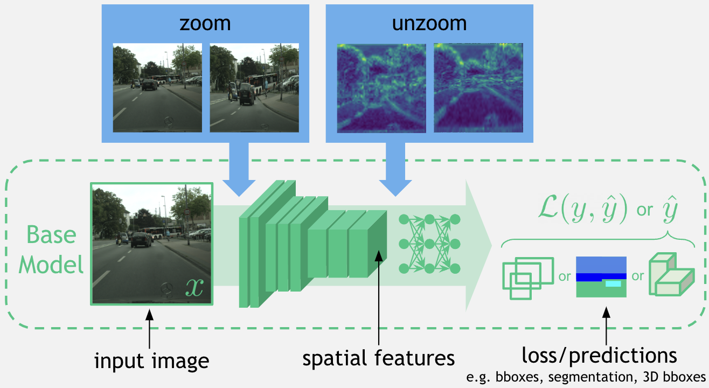
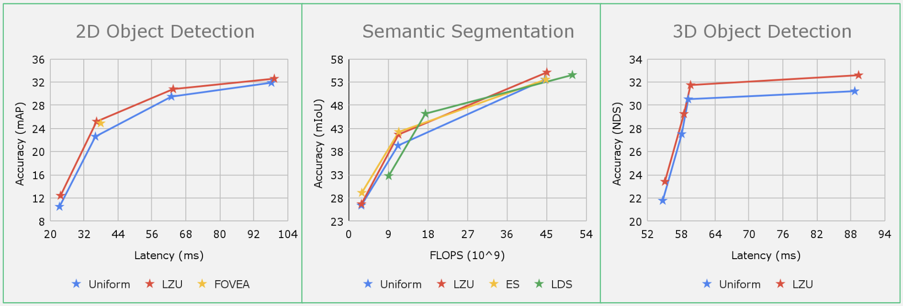
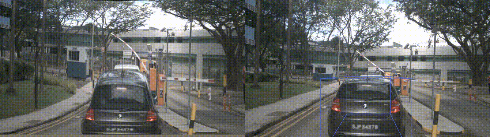

| Chittesh Thavamani | Mengtian Li | Francesco Ferroni | Deva Ramanan |
|---|---|---|---|
| Carnegie Mellon University | Carnegie Mellon University | Argo AI | Carnegie Mellon University Argo AI |
|
Paper |

Code |
|---|

Many perception systems in mobile computing, autonomous navigation, and AR/VR face strict compute constraints that are particularly challenging for high-resolution input images. Previous works propose nonuniform downsamplers that "learn to zoom" on salient image regions, reducing compute while retaining task-relevant image information. However, for tasks with spatial labels (such as 2D/3D object detection and semantic segmentation), such distortions may harm performance. In this work (LZU), we "learn to zoom" in on the input image, compute spatial features, and then "unzoom" to revert any deformations. To enable efficient and differentiable unzooming, we approximate the zooming warp with a piecewise bilinear mapping that is invertible. LZU can be applied to any task with 2D spatial input and any model with 2D spatial features, and we demonstrate this versatility by evaluating on a variety of tasks and datasets: object detection on Argoverse-HD6, semantic segmentation on Cityscapes5, and monocular 3D object detection on NuScenes4. Interestingly, we observe boosts in performance even when high-resolution sensor data is unavailable, implying that LZU can be used to "learn to upsample" as well.
LZU generalizes well to 2D object detection, semantic segmentation, and monocular 3D object detection. In all cases, LZU achieves a better cost-performance tradeoff than the uniform sampling baseline, while being competitive with task-specific methods like FOVEA2, ES1, and LDS3.


This work was supported by the CMU Argo AI Center for Autonomous Vehicle Research.